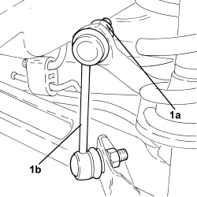
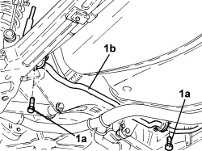
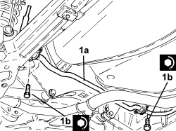
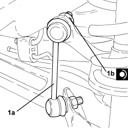
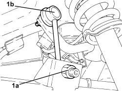
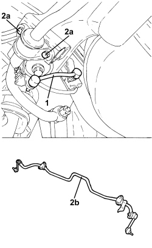

4420C10 REAR SUSPENSION STABILIZER BAR - R+R
- Path
- Procedures > 44 SUSPENSION AND WHEELS > 4420 REAR SUSPENSION > 4420C REAR SUSPENSION STABILIZER BAR/LINKS > 4420C10 REAR SUSPENSION STABILIZER BAR - R+R
- Kind
- repair procedure (removal / refitting; the operation number is the code)
- Applies to
- all engines; all production periods
- Interactive page
- https://sloeber94.github.io/elrnDB/#/939010854
Applies to: engines: 1.8, 1.9 JTS, 2.2 JTS, 1.9 JTD 8V, 1.9 JTD 16V, 2.4 JTD 20V; all production periods
 Removing
Removing
 Refitting
Refitting- Position the vehicle on a lift.
Op. 4450B13 REAR WHEELS (TWO) - R.R
1. Undo the nuts (1a) and disconnect the rear suspension anti-roll bar joints (1b).

Applies to: engines: 1.8, 1.9 JTS, 2.2 JTS, 1.9 JTD 8V, 1.9 JTD 16V, 2.4 JTD 20V; all production periods
1. Undo the bolts (1a) and remove the rear suspension anti-roll bar (1b) by withdrawing from the wheel compartment.

Applies to: engines: 1.8, 1.9 JTS, 2.2 JTS, 1.9 JTD 8V, 1.9 JTD 16V, 2.4 JTD 20V; all production periods
Refitting
Removing- Lubricate the damping rings on the stabiliser bar with silicone grease.
1. Position the stabiliser bar (1a) in its housing and secure it tightening the bolts (1b) to the recommended torque.
Component | Fastening | dia | Value (daNm) | Validity |
|---|---|---|---|---|
Rear suspension anti-roll bar | Bolt | M8 | (crossmember side) 2.2 - 2.7 |

Applies to: engines: 1.8, 1.9 JTS, 2.2 JTS, 1.9 JTD 8V, 1.9 JTD 16V, 2.4 JTD 20V; all production periods
1. Connect joints (1a) to the rear suspension stabiliser bar and secure by tightening nuts (1b) to the specified torque.
Component | Fastening | dia | Value (daNm) | Validity |
|---|---|---|---|---|
Rear suspension anti-roll bar joint | Bolt | M12 | (anti-roll bar side) 7.2 - 8.8 |

Applies to: engines: 1.8, 1.9 JTS, 2.2 JTS, 1.9 JTD 8V, 1.9 JTD 16V, 2.4 JTD 20V; all production periods
Op. 4450B13 REAR WHEELS (TWO) - R.R
- Remove the vehicle from the lift.
Applies to: engines: 3.2 JTS; all production periods
Removing
Refitting
Applies to: engines: 3.2 JTS; all production periods
